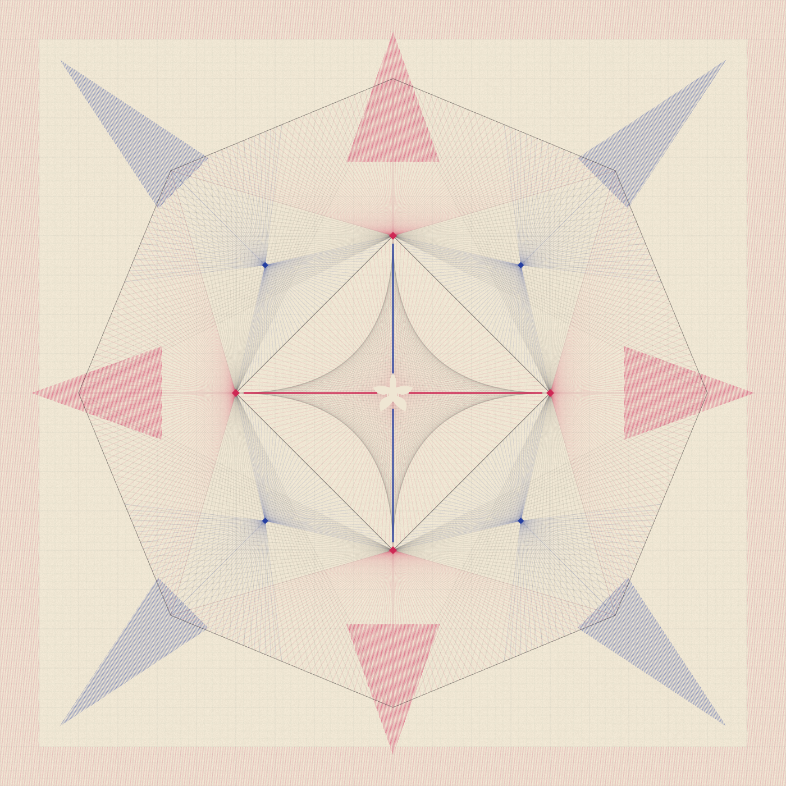

{{ t.title }}
{{ t.purpose }}
Humans and accountable institutions authorize. AI agents act only within explicit, verifiable and revocable limits.
Each pathway brings together projects, tools and research without replacing their canonical records.
{{ t.purpose }}
Work, support and financial participation stay separate. Support never creates ownership, investment, voting or profit rights.
The Commons explains and applies the standards. The canonical specifications live in ICSN Standards.
{{ pw.short }}
{{ pw.intro }}
No project in this pathway has a published canonical record yet. Projects appear here as soon as their catalog record and source documents are added.
No toolkit is published for this pathway yet. The calculator families below define what is planned.
Every project in this pathway answers the same eight control questions through a Project Control Index.
Research & standards library →Project Control Pack Standard ↗{{ pj.description }}
The detailed proposal for this program is being added to the Commons. This section fills in from its catalog record once the source documents are published.
{{ docsEmptyText }}
{{ tabNote }}
{{ pj.fundNote }}
Funding launches each woman’s M5 Bank of Business and, with others, a co-op. Registrations, reviews and licensing are designed to carry more of the operating cost each year. Fees are planning recommendations, not approved or deployed prices.
Assumes 800 paid BKOM registrations, 600 paid BKOB registrations, 100 optional entity services, some marketplace use, and initial algorithm reviews and licensing transactions.
At 1,000 businesses the program is not yet self-sustaining under these assumptions. An illustrative reduced second-year operating cost of $600,000 leaves a modeled gap of about $510,000. Initial grant support creates reusable public infrastructure; renewals, optional services and licensing gradually carry more of the continuing cost.
Next milestone: validate conversions and actual service costs with the first five iWBE pilot businesses, then revise the 1,000-business model before presenting it as an operating commitment.
No toolkit has been published from this project yet.
A catalog entry so the project can be found and cited. It is not a TitleChain registration, a Certificate of Title, or a claim of ownership or legal title.
Participation routes will be listed when the proposal is published.
Work, support and financial participation remain separate pathways. Project-specific permission is issued only through a Participation Passport ↗.
A proposed cross-disciplinary research and development program. Its first featured instrument project is the M5 Sovereign Intelligent Calculator.
Proposed program
A scientific and software conformance attestation: what was tested, by which reviewer, against which version.
Ownership or title records are issued only by the authorized legal issuer. A lab stamp never creates title.
openai/math is an identified external research source. Igor Rivin’s participation is proposed and not confirmed.
Release gate: an instrument is listed as released only when it is versioned, tested, reviewed and signed, and the release is separately approved.
Open the Calculator projectEvery model follows one open standard, so any builder can add to a family. No family has a released instrument yet. Mark the ones you want and we’ll build in that order.
{{ likeSummary }}No family matches “{{ famQ }}”.
{{ f.desc }}
A toolkit is built by one Commons project and can appear in many pathways. Each shows its real release state.
{{ t.purpose }}
{{ tl.purpose }}
{{ tl.evidence }}
A featured M5Labs service for people developing original algorithms. The creator decides whether to publish open source, license commercially, keep the algorithm private, or use different terms for different releases.
The Commons is the public discovery layer. Freedom Office is a member’s private workspace. Member integrations need the right credentials, licensing or business authority.
Proposed standards for public criticism and independent implementation. Commons explanations never supersede the canonical normative text.
Funding launches new M5 Banks of Business and co-ops so the platform can carry itself. Nothing here is an offering, investment or award, and support never creates ownership, investment, voting or profit rights.
Funding launches each woman’s M5 Bank of Business and, with others, a co-op. Registrations, reviews and licensing are designed to carry more of the operating cost each year. Fees are planning recommendations, not approved or deployed prices.
Assumes 800 paid BKOM registrations, 600 paid BKOB registrations, 100 optional entity services, some marketplace use, and initial algorithm reviews and licensing transactions.
At 1,000 businesses the program is not yet self-sustaining under these assumptions. An illustrative reduced second-year operating cost of $600,000 leaves a modeled gap of about $510,000. Initial grant support creates reusable public infrastructure; renewals, optional services and licensing gradually carry more of the continuing cost.
Next milestone: validate conversions and actual service costs with the first five iWBE pilot businesses, then revise the 1,000-business model before presenting it as an operating commitment.
The official SEC docket controls. The live observatory is unchanged at its existing address.
Deterministic keyword matching. It does not summarize the commenter’s position.
An attributable review record bound to the collected filing by its digest.
It may have moved, or its record has not been published yet.